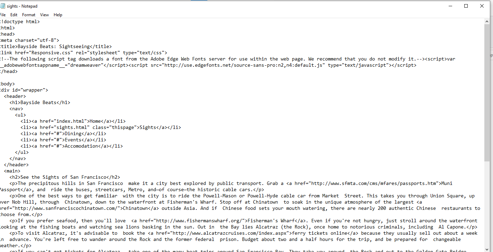
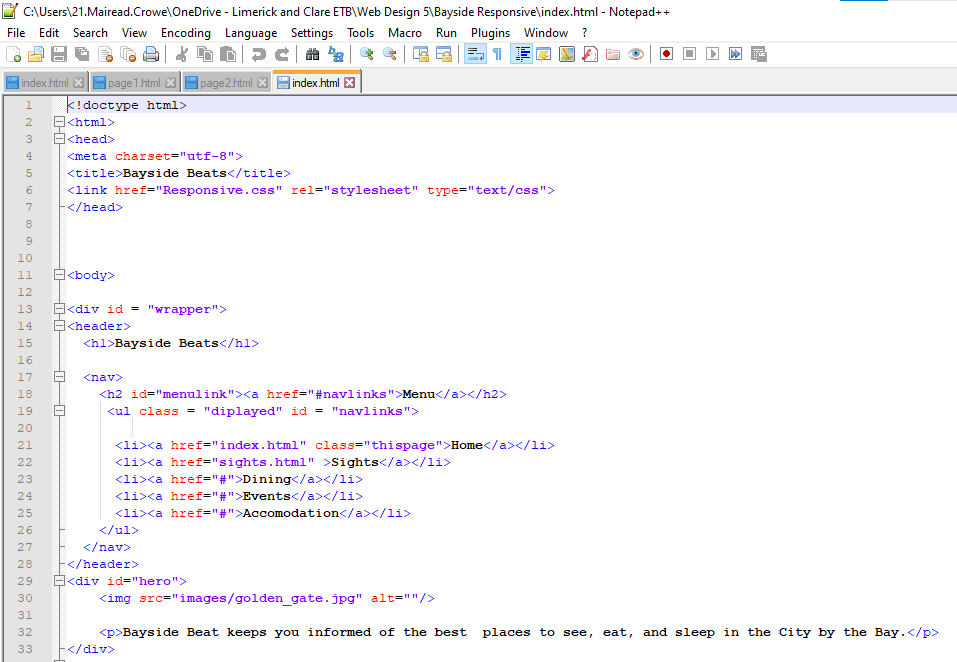
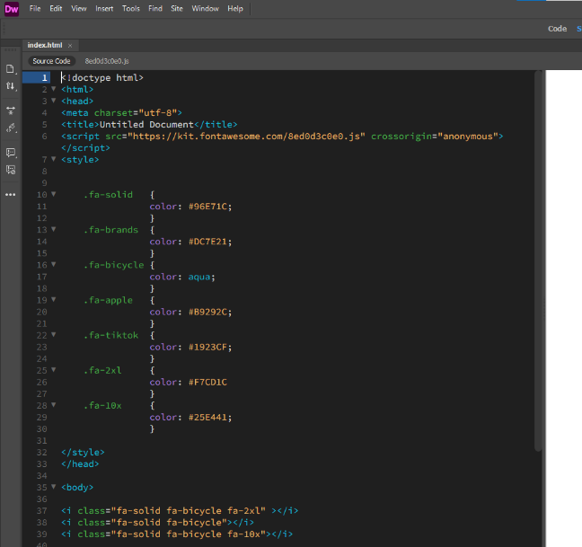
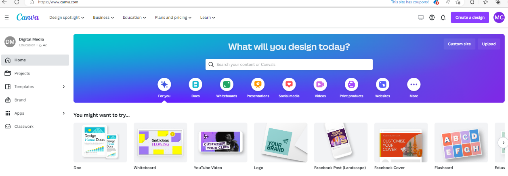
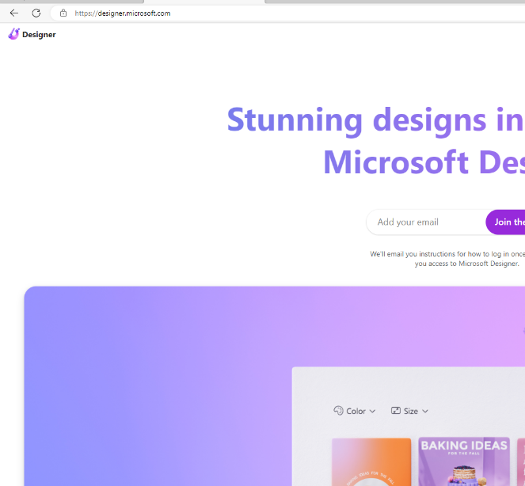
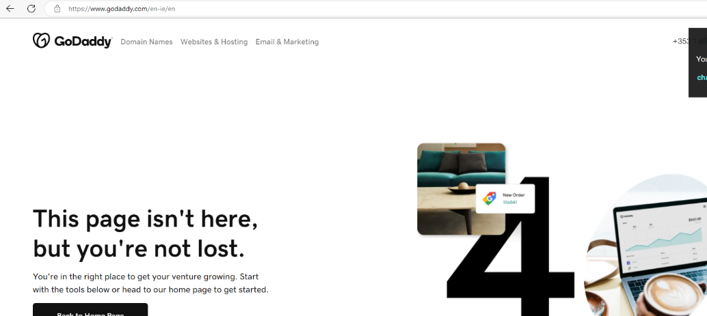
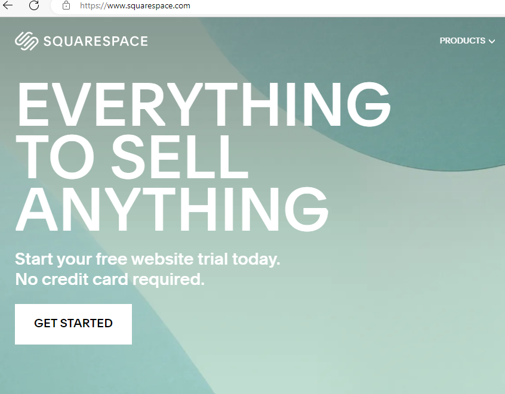
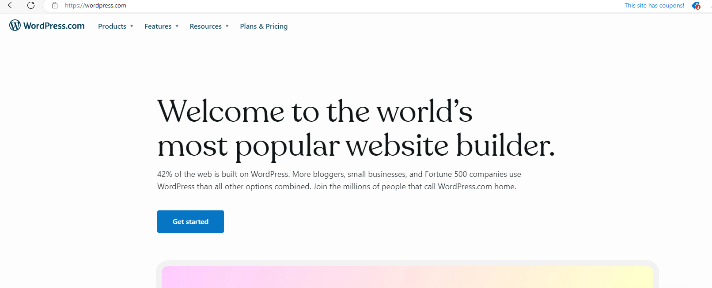

Web authoring applications
Web authoring software allows the user to build websites without any coding skills or programming knowledge. In order to allow you easily create websites, these software programmes use a variety of templates and libraries.
Website developers tend to use a text editor such as Notepad or HTML editor. Dreamweaver is one of the most popular website creators. (Milan Stanojevic , 2022)



Canva and Microsoft Designer are webpage builders that can be used simply to create your digital designs for your webpage.
 There are multiple CMS (Content Management Systems) available to used to support the design, development and publication of website content. These companies organise, track and retain digital content. (Anon., 2023)
There are multiple CMS such as Square Space, Go Daddy and Wordpress.


